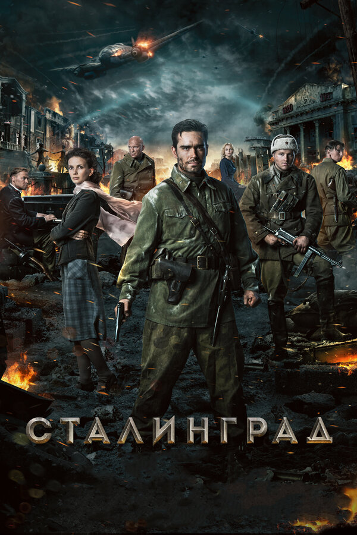
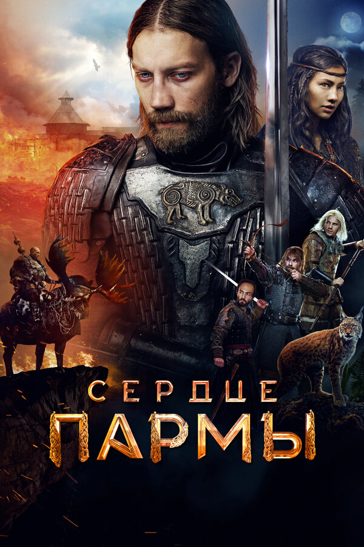
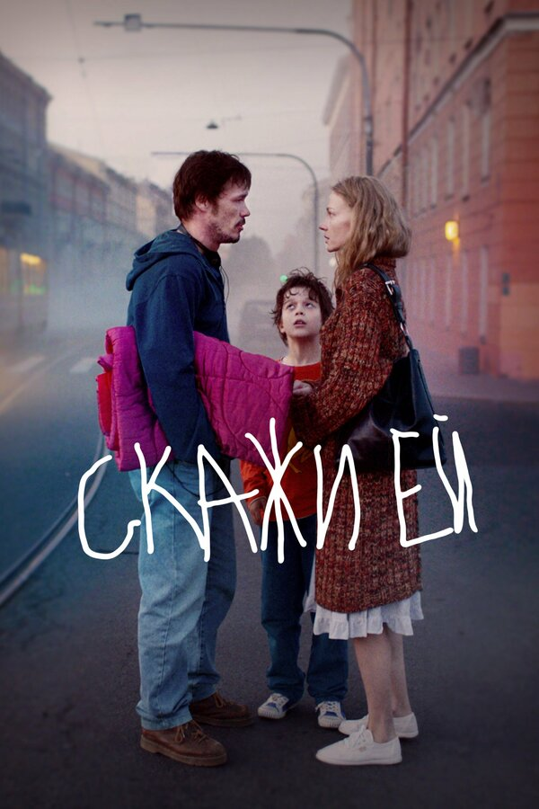
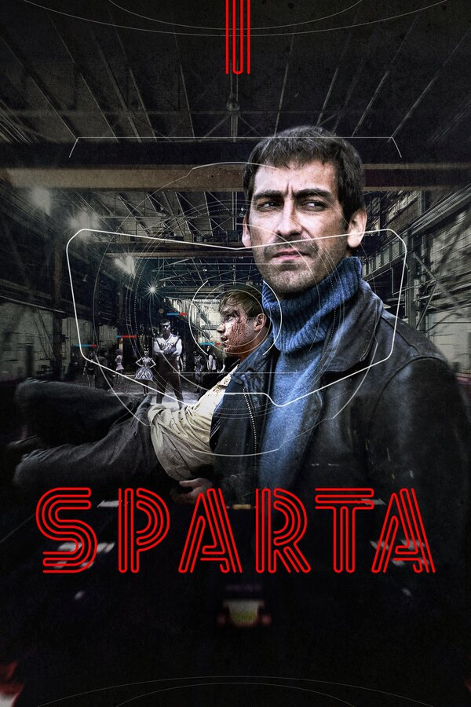
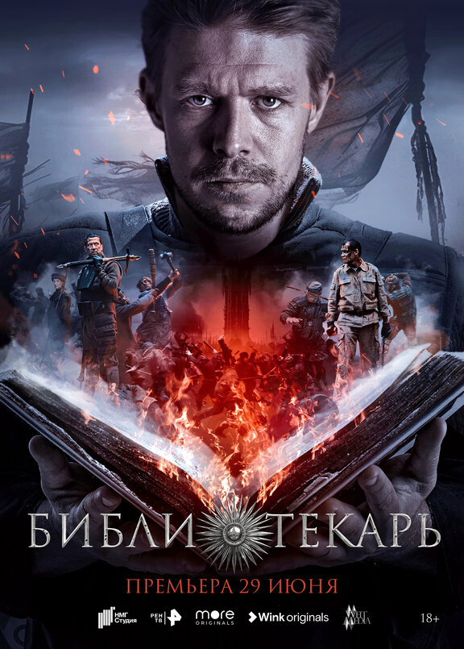
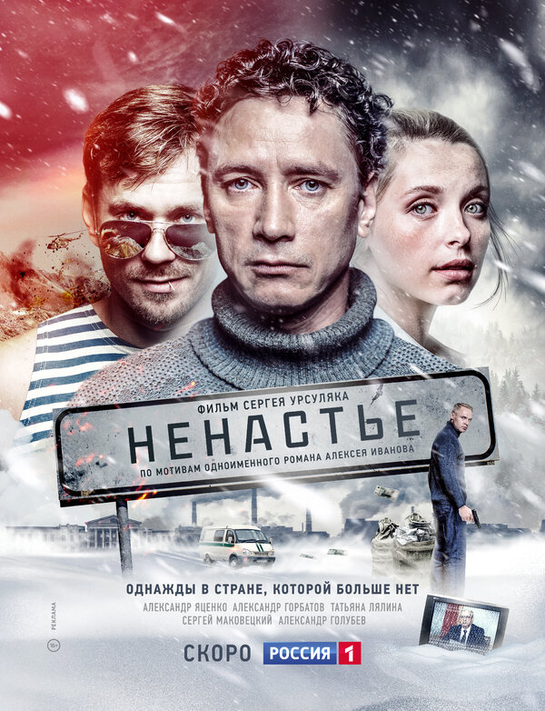
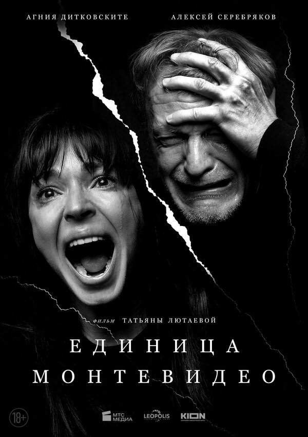
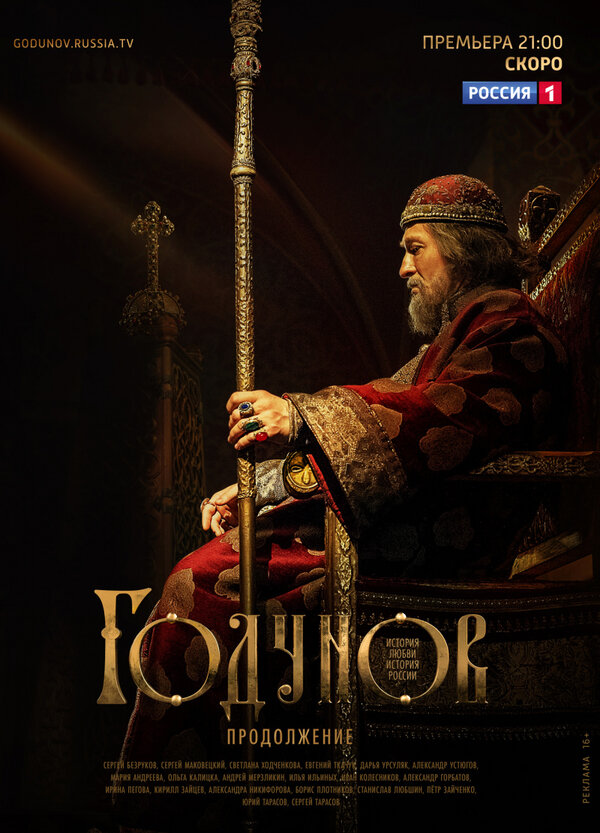
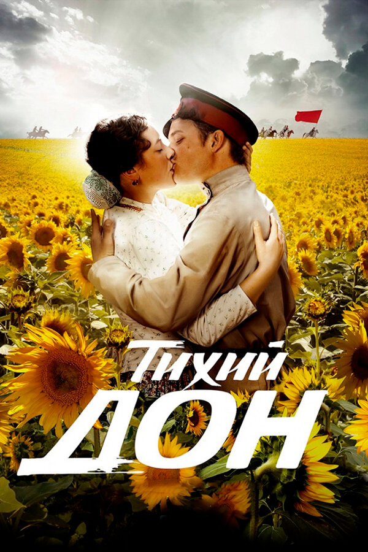
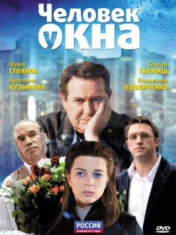

Илья Тилькин
Киносценарист · Драматург
Избранная фильмография

Сталинград
Фильм, 2013
Сердце Пармы
Фильм, 2022
Скажи ей
Фильм, 2020
Спарта
Netflix Original
Библиотекарь
Сериал, 2023
Ненастье
Сериал, 2018
Единица Монтевидео
Фильм, 2023
Годунов
Сериал, 2018
Тихий Дон
Сериал, 2015
Человек у окна
Фильм, 2010Материалы и интервью
Документальное Кино: Изнанка индустрии
О системных ошибках индустрии, уважении к Слову и о том, почему зритель всегда прав.
Sheinkin40: Искусство проектирования
Большой разговор о создании «Сталинграда» и работе над крупными историческими проектами.
Образование
«Сценарное мастерство — универсальный навык»
Курс по архитектуре истории для тех, кто хочет проектировать сюжеты любой сложности.